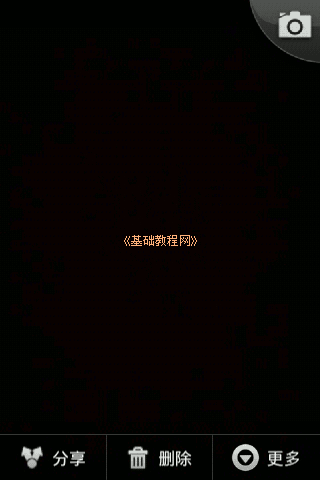

Android 安卓智能手机操作教程
作者：TeliuTe 来源：基础教程网
二、拍照片和录像 返回目录 下一课本节教你学会用手机拍照片和拍视频功能；
1、照相和录像功能
1）按手机上的照相按键，或者屏幕上的“相机”按钮，进入照相机功能；
2）下方有一排按钮，按左边最大的一个就是拍照的的“快门”按钮，中间是切换拍照和摄像，右边是相册按钮；

3）通过屏幕取景，选择好以后轻按一下快门按钮，即可拍下当前图像，右下角相册显示最新的照片缩略图；
4）按一下右下角的相片缩略图，即可打开最近拍摄的照片，图片下方是菜单按钮，在图片上点按可以调出编辑按钮；
5）点“菜单”按钮，出现分享、删除和更多选项，根据需要进行选择；

6）点按“更多”按钮，可以选择对图片进行简单处理；
7）按“返回”按钮可以回到照相，点中间的模式按钮切换到录像，左下角的快门也变成摄像红心按钮；
8）拍摄中界面上显示红心原点，再按一下快门按钮，就可以停止录像；
9）在所有程序里，按“相册”或“图库”按钮，可以进入图片查看；
本节学习了照相和录像的基础知识，如果你成功地完成了练习，请继续学习下一课内容；
本教程由86团学校TeliuTe制作|著作权所有
基础教程网：http://teliute.org/
美丽的校园……
转载和引用本站内容，请保留作者和本站链接。